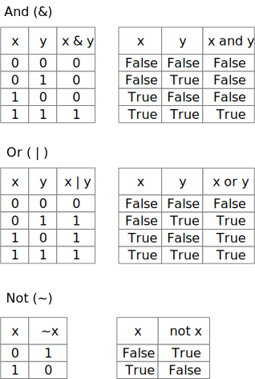

Bit Twiddling
Contents
Bit Twiddling#
As you have undoubtedly heard, the data and instructions manipulated by a modern digital computer are all in the form of binary numbers. Often we think of them in other ways: As characters, as strings, as (decimal) integers, as (decimal) floating point numbers, as whatever we choose to represent. Programming languages like Python help us mostly ignore that they are all really just binary numbers, and usually that is a good thing, but sometimes it is useful to peek under the covers and deal with the binary representation more directly.
In this chapter we will manipulate binary numbers that may have multiple fields that may be packed together into a single integer word. We will look at how to pack small binary numbers into fields of a larger binary number, and how to extract the small integers from the packed representation. Python provides several bitwise operations to make this relatively simple.
It’s already binary#
What’s already binary? Everything. Everything in the computer is already binary. We will not convert anything to binary. If it is in computer memory, it is already binary, because that is the only kind of information that modern computer memory can hold. No exceptions.
You may be under the impression that you have converted integers to binary
form in the past. In fact, Python has a built-in function called
bin, and you may be under the impression that bin converts a number to
binary:
>>> x = 42
>>> bin(x)
'0b101010'
You have been tricked! The bin function does not convert the integer to binary.
Let’s see what the type of the result for the bin function really is:
>>> y = bin(x)
>>> type(y)
<class 'str'>
The bin function produces a string. The string is a representation of how
we might write the binary number … but the number was already binary.
But isn’t that string also represented in binary? OK, you’ve got me there …
all strings are also represented in binary, so in that sense $\(101010_2\)$ (which we
write in Python as 0b101010) is
binary, but no more so than "Hello World".
So when and how was it converted to binary?#
When any kind of data, including your program source code, is read by the computer,
it is converted to binary as part of the reading process. When you strike the ‘k’
key on the keyboard, a binary code for the letter ‘k’ is transmitted to the computer.
When you type the keys ‘4’ and ‘2’, you are producing the binary codes for the
character ‘4’ and the character ‘2’. If you typed x = 42 in your Python program,
the Python compiler converted those character codes to the internal representation
$\(101010_2\)$.
But when I print it, I see ‘42’#
When you print x, the internal representation 0b101010 is converted into the character codes for ‘4’ and ‘2’. At no time was the decimal integer 42 ever present. It’s a pleasant illusion brought to you by Python.
The same output conversion takes place regardless of how the integer was initially written.
>>> 0b101
5
>>> x = 0b101010
print(x)
42
The binary representation of an integer#
Although everything is represented in binary, in this chapter we will deal only with integers, because their representation in binary is simplest.
When we write a decimal number on paper, we use a place value system: The digits ‘42’ mean $\(4\times{10^1} + 2\times{10^0}\)\(, and the digits '203' mean \)\(2\times{10^2} + 0\times{10^1} + 3\times{10^0}\)$.
Positive binary numbers are no different, except that the place value system uses powers of 2 instead of powers of 10. The binary number $\(101010_2\)\( means \)\(1\times 2^5 + 0\times 2^4 + 1\times 2^3 + 0\times 2^2 + 1\times 2^1 + 0\times 2^0\)$, or 32+8+2 = 42.
Treating bits as booleans#
Although we’re used to using the binary values for ordinary arithmetic (addition, subtraction, multiplication, etc.), we can also treat the individual binary digits as boolean values: 1 for True, 0 for False. The boolean operations on the bits act exactly like their counterparts for truth values:

We can extend the boolean operations on bits to integers bitwise by just applying the same boolean operation to each pair of bits. For example:
In Python:
>>> 0b1010100 & 0b10010110
20
>>> bin(0b1010100 & 0b10010110)
'0b10100'
>>> bin(0b1010100 | 0b10010110)
'0b11010110'
Note that here I’m just using the bin function print a string
representation of the binary number. Internally the value
of the result was always binary.
We can perform exactly the same bitwise operations when we enter integers in decimal notation:
>>> 3 & 5
1
>>> 3 | 5
7
Check your understanding#
Before going on, make sure you understand why 3 & 5 == 1 and 3 | 5 == 7.
Then predict the value of 3 & 4, and check it in the Python console.
Also predict and then check the value of 3 | 4.
When I write 3 & 5, you can be sure I mean $\(3_{10}\)\( & \)\(5_{10}\)\(, not
only because I didn't use the `0b` prefix to indicate a binary
number, but also because \)\(3_2\)\( & \)\(5_2\)$ doesn’t even make sense.
Why wouldn’t that make sense?
Shifting#
In addition to ordinary arithmetic (addition, subtraction, etc.) and
bitwise operations (and, or, not), digital computers provide shift
operations that move binary digits within a memory word. These
are written in Python as << (shift left) and >> (shift right).
For example, 3 << 2 means that the value $\(3_{10}\)\(, which is
\)\(11_{2}\)$, should be shifted left 2 places, with zeros filling
in for the last two digits.
In Python:
>>> 3 << 2
12
>>> bin(12)
'0b1100'
When we shift right with >>, some bits may be “shifted off” into the
“bit bucket”.
The “bit bucket” is not a physical thing. It is a term programmers use to indicate that those bits have been discarded.
In Python:
>>> 7 >> 2
1
Masking#
You might well wonder what use shifting could be. It becomes more useful when we combine it with the bitwise boolean operations and (&) and or ( | ).
For what follows, and whenever we refer to the positions of bits, we will number each bit according to the power of 2 it represents. Thus the low-order bit is bit 0 (representing $\(2^0\)\(, or \)\(1\)\(), and bit 3 represents \)\(2^3\)\(, or \)\(8\)$). A single byte of memory is 8 bits, numbered from 0 to 7:
Suppose we wanted to extract just the value of bits 4..6.
We can discard all the other bits by constructing a mask, a value with 1 in bits 4..6 and 0 in all the other bits. We mask the value using the bitwise and operation.
Masking selects just the bits we are interested in, setting all the other bits to zero, but they are still bit numbers 4..6. If we want to treat them as if those bits were the entire number, we can then shift them from bits 4..6 to bits 0..2.
In Python:
>>> original = 0b01010011
>>> mask = 0b01110000
>>> extracted = (original & mask) >> 4
>>> bin(extracted)
'0b101'
>>> extracted
5
Packing#
Suppose we had two natural numbers between 0 and 15, inclusive. Since $\(15_{10}\)\( is \)\(1111_2\)$, each of these numbers can be represented with 4 binary digits. Suppose we wanted to store them together, “packed” into a single 8-bit word. We can do this by shifting one of them into bits 4..7, leaving the other in bits 0..3, and combining them with “or”.
def pack_4_4(x: int, y: int) -> int:
"""Pack two 4-bit values into an
8-bit value.
x and y must be in range 0..15 inclusive.
Result is in range 0..255 inclusive.
"""
assert 0 <= x <= 15
assert 0 <= y <= 15
return (x << 4) | y
We can reverse this process, extracting the two 4-bit values by masking and shifting:
def unpack_4_4(packed: int) -> Tuple[int, int]:
"""Unpack an 8 bit value into two 4-bit values,
treating bits 0..3 and 4..7 as non-negative
integers, returned as a tuple.
"""
# Extract bits 0..3
y = (0b1111) & packed
# Extract bits 4..7
x = ((0b11110000) & packed) >> 4
return (x, y)
It is relatively rare to pack values this way in Python. Python is a language designed to be simple and and quick for the programmer, not super efficient for the computer. When we really need the efficiency of packing numbers together, we would typically choose a programming language (like C or C++) that is designed with a higher priority on efficiency.
It is very common, on the other hand, to pack values this way in low level representations of data and code. In particular, the instructions interpreted by a computer central processing unit (CPU), such as an Arm or Intel processor, are always composed of several different fields packed into a memory word.
Example: RGB color codes#
Another place where you may have encountered values packed in this manner is the red-green-blue (RGB) color values used in web pages. Such a color is encoded as a 24-bit number, made up of an 8-bit value (that is, between 0 and 255) for its red component, an 8-bit value for its green component, and an 8-bit value for its blue component. Typically you will see these expressed in base 16, known as hexadecimal. The hexadecimal value $\(\textrm{ff}00\textrm{ff}_{16}\)\(, written as `#ff00ff` in HTML or CSS and written `0xff00ff` in Python, for example, can also be described in CSS as `rgb(255,0,255)`. It is a bright purple with maximum values of red and blue (\)\(255_{10}\)\( or \)\(\textrm{ff}_{16}\)\() and no green component (\)\(00_{16}\)$).
def rgb_pack(r: int, g: int, b: int) -> int:
"""Pack the red, green, and blue values into an integer"""
rgb = (r << 16) | (g << 8) | b
return rgb
def rgb_unpack(rgb: int) -> Tuple[int, int, int]:
"""Unpack rgb color into r, g, b components"""
b = rgb & 255
rg = rgb >> 8
g = rg & 255
r = rg >> 8
return (r, g, b)
purple = rgb_pack(255, 0, 255)
assert purple == 0xff00ff
r, g, b = rgb_unpack(purple)
assert r == 255 and g == 0 and b == 255
Summary#
Everything in computer memory is encoded in binary. Although we typically write Python programs using decimal number notation, they are translated into binary when the program is read, and are never represented in decimal. We don’t have to convert values to binary. They are already binary.
Each binary digit (bit) in an integer represents a value using a place value system that is just like our standard decimal system, except with powers of 2 instead of powers of 10.
We can also think of each binary digit as representing a truth
value: 0 for False, or 1 for True. The bitwise logical operations
of Python treat the digits this way. x | y takes the logical ‘or’
of each bit in x with the corresponding bit in y. x & y takes
the logical ‘and’ of each bit in x with the corresponding
bit in y.
We can also “shift” bits with << (shift left) and >> (shift right).
Using bitwise logical operations in combination with
shifting, we can pack multiple small binary numbers into
one integer, and unpack them again.
This chapter has dealt only with positive binary numbers and zero. Negative numbers will be treated in a separate chapter.
Source Code#
Sample code for this chapter